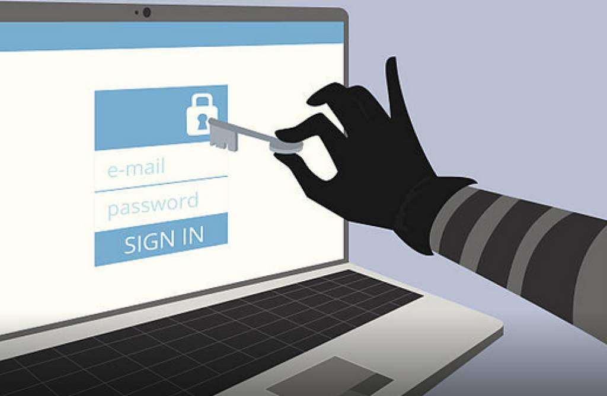

La seguridad de redes consiste en las políticas y prácticas adoptadas para prevenir y supervisar el acceso no autorizado, el uso indebido, la modificación o la denegación de una red informática y sus recursos accesibles. La seguridad de redes involucra la autorización del acceso a datos en la red, que es controlada por el administrador de red. Los usuarios eligen o se les asigna una identificación y contraseña u otra información de autenticación que les permite acceder a información y programas dentro de sus autorizaciones. La seguridad de red cubre una variedad de redes de computadoras, tanto públicas como privadas, que se usan en trabajos cotidianos; realizar transacciones y comunicaciones entre empresas, agencias gubernamentales e individuos. Las redes pueden ser privadas, como dentro de una empresa, y otras que pueden estar abiertas al público. La seguridad de la redes está presente en organizaciones, empresas y otros tipos de instituciones. Hace como su nombre indica: protege la red, además de proteger y supervisar las operaciones que se realizan. La forma más común y simple de proteger un recurso de red es asignándole un nombre único y la contraseña correspondiente.
La administración de seguridad para redes varía según las diversas situaciones. Una casa u oficina pequeña puede requerir solamente seguridad básica, mientras que las grandes empresas pueden requerir un software y hardware de alto mantenimiento y avanzado para evitar ataques maliciosos de piratería y spam.
https://www.youtube.com/watch?v=N49s0FAPBwY
Las redes están sujetas a ataques de fuentes maliciosas. Los ataques pueden ser de dos categorías: "pasivos" cuando un intruso intercepta datos que viajan a través de la red, y "activos" cuando un intruso inicia comandos para interrumpir el funcionamiento normal de la red o para realizar reconocimiento y "espionaje" para encontrar y obtener acceso a activos disponibles a través de la red.5 de tovar salas 11-09